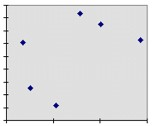
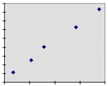
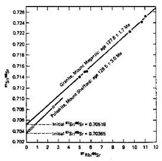
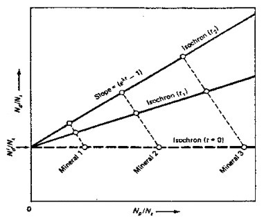

| Feature Article - August 2000 |
| by Do-While Jones |
Evolutionists generally don't use carbon 14 dating because they believe most rocks of interest were formed millions of years ago, and were never alive. So, they like to use other radioactive materials that decay much more slowly. They prefer elements that have half-lives that are measured in millions or billions of years.
Last month we told you that the equation for exponential decay is Ae-t/T. We also said that just about everything that decays is described by this same equation. All that differs is the value of T, the "time constant". There are lots of unstable radioactive elements that decay in just a few days. Scientists do have the patience to study them, and they all decay exponentially. So, it is entirely reasonable to assume that all radioactive decay is exponential, regardless of the time constant. The trick, as we said, is to figure out a way to measure T quickly when T is very long.
If you have taken at least one semester of calculus, you know that the derivative of Ae-t/T with respect to time is (-A/T)*(e-t/T). You also know that e0 is 1. So, the value of (-A/T)*(e-t/T) right now (when t = 0) is simply -A/T. If you don't know any calculus, you can be thankful that I am not going to explain it to you. Just take my word for it.
The derivative tells you how fast something is changing. In our case, it tells us how fast the amount of a radioactive isotope is changing. The minus sign means that there is less of it as time goes on. The value A is the amount we have right now, which we can easily measure. So, if we know how fast the isotope is decaying, we can solve Decay rate = -A/T to find T.
How do we know how fast it is decaying? Well, every time the isotope decays, it emits some sort of radiation. Therefore, we can use a Geiger counter, or some other similar instrument, to count the number of atoms that are decaying per second. Since the experiment is easily done, and quite repeatable, we know with a high degree of confidence what the half-lives of long-lived radioactive elements are.
Often, the amount of stable daughter element is used to estimate the amount of original radioactive mother element there was. Remember in the May newsletter we printed the e-mail from Tim, who stated quite confidently that "'naturally occurring' Lead 206 makes up 24.1% of all the Lead in a sample." Therefore, he says, "the excess above 24% tells me [Tim] how much U-238 there was." As we pointed out last June, there isn't any way to really know how much lead 206 was there to begin with. The date calculation is no more accurate than the initial guess of how much lead 206 was in the rock when it was formed.
It is sometimes claimed that the isochron method can determine the initial amount of daughter element, but that method depends upon an invalid assumption that we will discuss later.
| I am a student studying evolution, and I noticed your website. ... My real comment to you regards your statement about Mount St. Helens. You state that "radioactive measurements of these rocks show them to be millions of years old" And why shouldn't they be? Even though you say that they were produced in days or hours, have you not considered where this stratified rock is from? It is from deep inside a volcano, and it doesn't surprise me that the rock, lava, whatever, is millions of years old. Please think this over and explain what you mean. |
Clearly, the magma that came out of Mount St. Helens existed before May 18, 1980. The question the potassium-argon method is supposed to answer isn't, "When was the magma created?" The question of interest is, "How long has it been since the magma came out of the volcano?"
| The K-Ar method of dating differs from other common methods by involving a decay product that is an inert gas. Even at moderately low temperatures (see discussion below), this gas is a fugitive component and is typically not incorporated in minerals. Thus a newly formed mineral contains no argon to begin with, but with time, 40K slowly decays to 40Ar ... Absolute dates by the K-Ar method can be obtained on both minerals and whole rocks. These may indicate the time since the formation of a sample, but because most igneous and metamorphic rocks form at moderate to high temperatures, most dates indicate the length of time since the material dropped below some critical temperature at which the diffusion of argon out of the sample becomes negligible. This temperature is known as the blocking temperature, and varies with the mineral involved, but is approximately 350oC. ... For an age determination by the K-Ar method to be accurate, the assumption that no radiogenic argon was present to begin with must be valid; also no radiogenic argon that is produced in the mineral or rock can have escaped, nor can any radiogenic argon from an external source have been absorbed. Each of these can, in particular situations, be a source of serious error. [Then he gives some examples of places where the method has failed to give accurate results.] 1 [emphasis supplied] |
In other words, evolutionists assume that since argon is a gas, all of it should have escaped from the lava before it cooled. Therefore, all the 40Ar in the rock should be the result of decay from potassium. Based on the measured potassium, argon, and the decay rate, they calculate an age. That's why it doesn't matter how long the magma was in the volcano before it erupted. They believe that when the volcano erupts, all the 40Ar escapes, and the atomic clock gets reset to 0.
If all the argon escaped from hot lava of volcanoes that erupted long ago, then all the argon should escape from the hot lava of volcanoes that erupt in modern times, too. But modern lava does have 40Ar in it. This is known as the "excess argon problem" in geological circles. It is our position that there is no such thing as excess argon. The rocks have the right amount of argon in them. This amount just happens to be more than the amount predicted by an incorrect theory.
It isn't hard to find references to the excess argon problem in the literature. There was one just last month in the journal Science, which certainly isn't a creationist publication. The second sentence of the second paragraph said,
| The ages yielded by large phlogopites from xenoliths are, however, commonly older than the eruption, a phenomenon that has been interpreted as the incorporation of excess radiogenic Ar from a deep fluid source. 2 [emphasis supplied] |
 |
For the purpose of this illustration, we will use some fictional data. Imagine that we work for the highway department and have collected some data on various segments of roads. We have measured the average speed of vehicles traveling on each section of road, and the number of fatal accidents per year per vehicle on that section of road. Furthermore, suppose that we plot this data and get the graph at the left. In this graph there is no correlation between speed and traffic accidents. This could be because some of the road segments had sharp, blind turns. Perhaps some segments were high in the mountains and got lots of snow or black ice on them. |
On the other hand, let's imagine that the highway data turned out to look like this. This graph tells us that there is a correlation between speed and fatal accidents. The most accidents happen on those segments of road where people drive the fastest. |
 |
This suggests a cause-and-effect relationship. The graph, all by itself, does not tell us which is the cause and which is the effect.
Different people might draw different conclusions about the cause and the effect. One scientist might conclude that driving fast causes more traffic accidents. Another scientist might conclude that drivers know which sections of road are most deadly, so they drive very fast on them to spend as little time in the danger zone as possible. Clearly, the first explanation is more reasonable, but we can't determine that from the graph alone. We know the first explanation is more reasonable from other data that does not come from the graph. The graph merely shows us that speed and accidents are somehow related.
Sometimes things might be correlated because of a cause-and-effect relationship, but the cause might not be one of the variables plotted. Suppose that the second fictitious graph represented salary at age 30 and high school SAT scores.
Certainly future salary cannot be the cause of high SAT scores. The cause must always occur before the effect. We know that intuitively, not from the graph.
It might be that high SAT scores result in higher salaries. That is at least plausible, and might even be the correct explanation.
It is entirely possible that test scores and salaries are both effects of a third cause that isn't even on the graph. It may be that good schools and good teachers produce pupils who score well on tests and get good jobs. The true cause may be the educational system (or social factors, or economic factors, etc.). The graph cannot tell us that.
Now, let's finally apply this example to the question at hand. It is commonly the case that the graphs of the radioactive parent element and stable daughter element measured in rock samples look like this:
 |
Unlike the previous fictitious examples, this is real data. It shows the composition of rock samples taken from two mountains in southern Quebec, published in a modern geology textbook 3. This graph shows an undeniable correlation. It is typical of graphs of this kind of geologic data. One might conclude that whatever process created the elements in the rock, created different amounts of mother and daughter elements. Furthermore, when that process created more of the mother element, it also created more of the daughter element. The graph does not tell us what that process is. It could be that when stars explode they create different amounts of the various elements, and, for some reason, create more of the daughter when they create more of the mother. Or, it could be that when an intelligent designer creates rock, that designer has some reason (which we have not discerned) for creating more mother element and more daughter element in some cases. All the graph does is show a definite correlation. The graph itself does not give us any kind of clue as to what process caused the correlation. |
Let's look more closely at the graph. The X axis represents the ratio of 87Rb to 86Sr. The Y axis represents the ratio of 87Sr to 86Sr. The X and Y values are both divided by 86Sr simply because it is easier to measure ratios than absolute numbers of atoms. The 86Sr is merely a scale factor of convenience that normalizes the data.
Note also that the Y axis is distorted. Instead of going from 0.0 to 0.8, it goes from 0.702 to 0.726. If one plotted the graph with the origin at (0,0) instead of (0, 0.702), the line would have been almost horizontal. This isn't really unethical, because it would be very difficult to see any trend if plotted on a scale from 0.0 to 0.8. We aren't criticizing them for choosing the axis scale as they did. We just want to make sure that you realize that although there were large differences in 87Rb to 86Sr ratios (plotted on the X axis), there really wasn't very much difference in the 87Sr to 86Sr ratios (plotted on the Y axis).
How do evolutionists get age out of this data? We will let the geology text explain.
| ... Np is the number of atoms of the parent nuclide, Nd the number of atoms of the daughter element, and Ns the number of atoms of a nonradiogenic isotope of the same element. Three minerals formed in a rock at the same time have different concentrations of parent nuclide but all have the same initial ratio of Nd/Ns. With time, the parent nuclide decays, and the amount of daughter product formed is proportional to the parent present. At any time (t), the minerals plot on a straight line known as an isochron; the age can be determined from the slope of this line. 4 |  |
Let's review the assumptions evolutionists make.
First, the 87Sr to 86Sr ratio in every rock sample of a given formation was the same when the rocks were formed. In other words, all the data points initially fell on the dotted horizontal line in the figure above. Therefore, if these rocks had been analyzed roughly 127 million years ago, when they were supposedly created, all the data points for Mount Megantic would have fallen on the line Y = 0.70518. All the data points for Mount Shefford would have fallen on the line Y = 0.70365. Mount Megantic must have had just a little bit more 87Sr than Mount Shefford did when they were created, "indicating that Megantic rocks assimilated larger amounts of crustal rocks, which normally have a high 87Sr/86Sr ratio." 5
Second, they assume that the 87Rb/86Sr ratio in every rock sample of the given formation was different when the rocks were formed. (Why would they assume one ratio is always the same, and the other is always different?)
In Mount Megantic, the ratio ranged from 5 to 11 when the rock was formed. At Mount Shefford it ranged from about 0.2 to 3 when the rock was formed. The textbook doesn't explicitly tell why they make this assumption, but the reason is clear. The half-life of 87Rb is 48.8 billion years. Even if the rocks were 4.6 billion years old, only 6.3% of it would decay. So, the amount in the rock now can't be much less than the amount that was there 127 million years ago. Furthermore, 86Sr doesn't decay at all. So the amount of 86Sr measured today must be the amount that was there whenever it was created. (Assuming, of course, that water hasn't dissolved any of it away, or brought any more in from some other source.)
Third, they assume that the rocks are old enough that 87Rb had time to decay. If the rocks are 10,000 years old, then only 0.00002% of the 87Rb has decayed. That isn't enough to measure accurately. But, if the rocks are 127 million years old, then 0.1802% has decayed. That might still be tough to measure, but at least it is feasible.
So, as time goes on, the ratio of 87Rb to 86Sr decreases because some of the 87Rb is decaying. At the same time, the 87Sr to 86Sr ratio is increasing because 87Sr is being produced by the decay of 87Rb. This will cause the sample points to move to the left and up on the graph.
What the text doesn't tell you is that they don't move very far. For example, one of the Mount Megantic points appears to be at (5.000000, 0.714000) now. That point would have been (5.009000, 0.712713) if the measurement had been made 127 million years ago.
We don't know why the ratio of 87Rb to 86Sr varies so much. Evolutionists don't know either. The textbook author speculates that it is because rocks assimilate various amounts of crustal rock when they are formed; but he doesn't know that for a fact. Nor does he know why the rocks would assimilate various amounts of crustal rock. It is just a guess he makes to try to explain the data.
But if there is more 87Rb in crustal rock, and if the crustal rock has been around for 4.5 billion years, then that 87Rb had time to put a little more 87Sr in the crustal rock. So, those rock samples that have more 87Rb should have had more 87Sr when they formed, invalidating their assumption that the 87Sr/86Sr ratio was the same regardless of the amount of 87Rb when the rocks formed.
Ages of Rocks in Millions of Years | |||||
|---|---|---|---|---|---|
| Formation | K-Ar | K-Ar Isochron | Rb-Sr | Rb-Sr Isochron | Pb-Pb Isocrhon |
| Uinkaret Plateau | 0.01 | ||||
| 1.0 - 1.4 | |||||
| 2.63 | |||||
| 3.6 | |||||
| 3.67 | |||||
| 1230 - 1310 | 1300 - 1380 | ||||
| 1260 - 1380 | |||||
| 1310 - 1370 | |||||
| 1320 - 1440 | |||||
| 1360 - 1420 | |||||
| 2390 - 2810 | |||||
| Cardenas Bassalt | 771 - 811 | 682 - 748 | |||
| 809 - 877 | |||||
| 838 - 868 | |||||
| 780 - 820 | 920 - 1040 | 1000 - 1140 | |||
| 800 - 840 | 990 -1130 | ||||
| 990 - 1190 | |||||
| 1010-1170 | |||||
| 1030 - 1110 | |||||
| 1050 - 1150 | |||||
| Diabase Sill | 874 - 954 | 926 | |||
| 924 - 984 | |||||
| 680 - 1020 | 1000 - 1140 | ||||
| 740 - 1100 | |||||
| 1030 - 1070 | |||||
| 1030 - 1090 | |||||
| 1100 - 1280 | |||||
| 1300 - 1440 | |||||
The Uinkaret Plateau samples came from lava flows on the plateau at the top of the Grand Canyon. Some of these lava flows actually flow down into the canyon, so the eruption must have occurred after the canyon was formed. This lava is some of the youngest rock in the Grand Canyon. The radiometric ages for this formation go from 10,000 years (the 0.01 K-Ar date in the upper left section of the table) to 2.81 billion years (the Pb-Pb isochron date). Rubidium-strontium dates all agree that the rocks are about 1.3 billion years old, which would make them pre-Cambrian rocks, not modern Quaternary rocks (which they obviously are).
The Cardenas Basalts are late pre-Cambrian rocks. Evolutionists believe they are more than 600 million years old. So, they believe 700 million to 1 billion years is a reasonable age. But which isochron age should you believe? That would depend on whether or not you find pre-Cambrian fossils in them. If you believe the fossils you find are 700 million years old, then the K-Ar date is right. If you believe the fossils are more than 1 billion years old, then Rb-Sr gives the correct date.
The Diabase Sills are some of the deepest, and therefore oldest, rocks in Grand Canyon. But they yield some of the youngest Rb-Sr dates. They have the oldest K-Ar isochron dates, but those dates aren't nearly old enough. They should be several billion years old (according to evolutionists).
| Quick links to | |
|---|---|
| Science Against Evolution Home Page |
Back issues of Disclosure (our newsletter) |
| Web Site of the Month |
Topical Index |
Footnotes:
1
Anthony R. Philpotts, Principles of Igneous and Metamorphic Petrology, 1988, Prentice Hall, page 430
(Ev)
2
Kelly & Wartho, Science, 28 July, 2000, "Rapid Kimberlite Ascent and the Significance of Ar-Ar Ages in Xenolith Phlogopites", page 609 https://www.science.org/doi/10.1126/science.289.5479.609
(Ev)
3
Anthony R. Philpotts, Principles of Igneous and Metamorphic Petrology, 1988, Prentice Hall, page 428
(Ev)
4
ibid.
5
ibid.